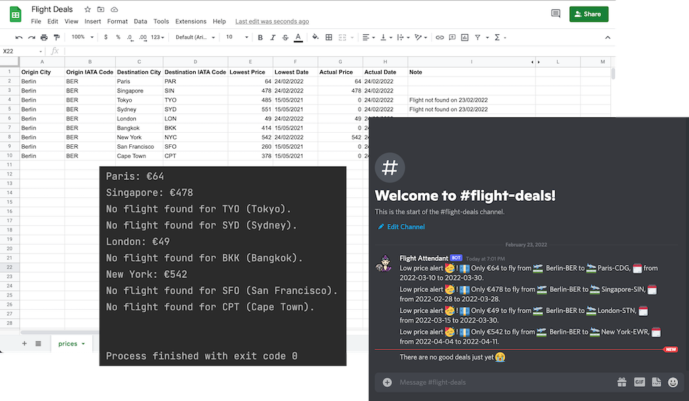
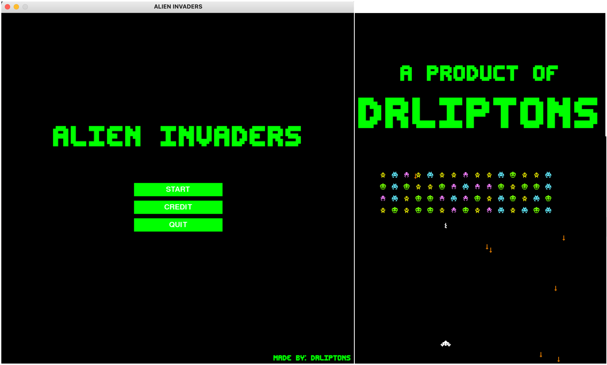
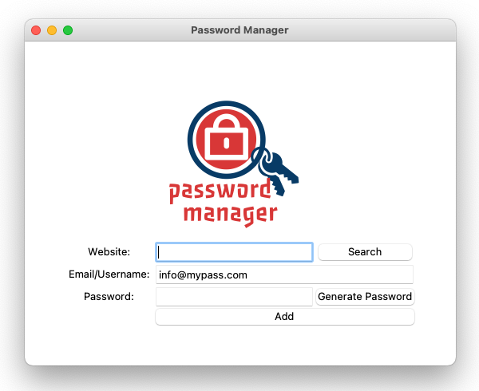
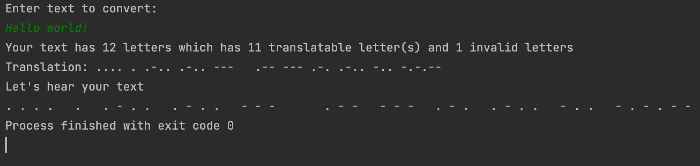
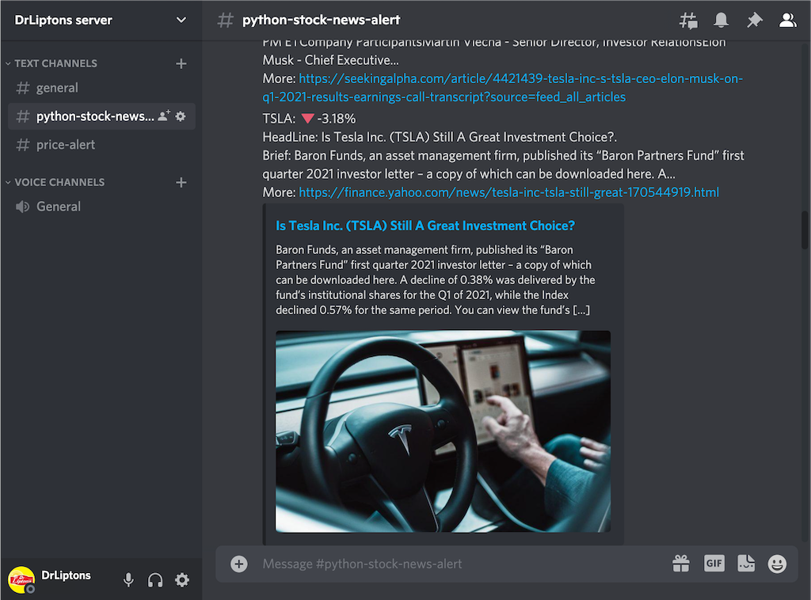
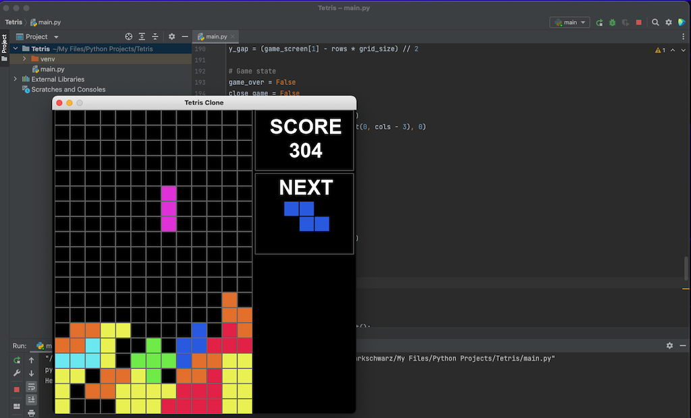
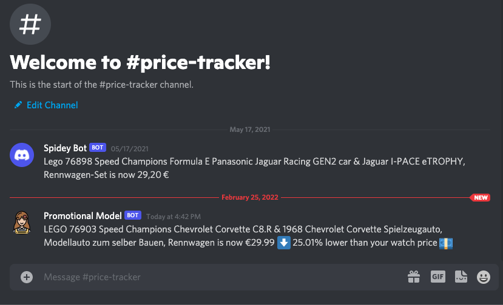

Overview
I made this site to serve as an overview of all the projects that I have in my repository. It should give quick access to a short reminder to me and give an introduction to anyone who wants to know about the available projects. I find it easier to have everything documented in one page with a teaser to recall previous work I have done. Typically, I have offline notes, but often find it difficult to have a quick browse even with well-organized material.
At a Glance
Python projects
- Alien Invaders
- Password Manager
- Text2MorseCode
- Stock News Alert
- Flight Deals
- Tetris Clone
- Automated Job Application
- Price Tracker
TensorFlow
Python projects
Flight Deals
Get the best flight deals like a pro
🗓 Added: February 23, 2022

Flight deals is an automated flight price search and notification program. It’s designed to be run by a task manager to check flight prices on (at least) a daily basis. The program was inspired by my price tracking websites. Nowadays, there a quite a lot of deals checkers. In order to use them, you have to register with your email to get a price notification, mostly on a daily basis. This code can be run on l local computer or be deployed on a task-managing website. It’s enough to run it once a day.
Alien Invaders
A clone of one of the most successful game in the world "SPACE INVADERS"

🗓 Added: February 20, 2022
Alien Invaders is a game inspired by the original game Space Invaders by Taito Corporation. Space Invaders was developed by Tomohiro Nishikado and launched in 1978. The game was a tremendous success with grossed $3.8 billion. I think we all know how fun this game is. For more information about the original game here.
I have spent so many great hours in my childhood playing this game. On one weekend, I decided to make a quick clone with python. The game still lacks a couple of functions, but it was close to what I have expected.
Password Manager
Generate and save your password
🗓 Added: February 17, 2022

Password Manager is a simple password-generating application. The application can generate a random password that contains letters, numbers, and symbols. The length of the password will randomly vary between 12 and 18 symbols. Users can save their generated username and password in the application and search for it later.
The user interface is made with Tkinter and is nothing fancy. I have noted that at the time of writing this readme file, Tkinter isn't much enjoyable in some function on mac as of on windows. Mac users might be frustrated sometimes when Tkinter isn't working as expected.
Text to Morse Code
Easy convert text into morse code
🗓 Added: February 17, 2022

A funny little side project to translate text into morse code. The program can convert alphabets, numbers, and a few symbols in to morse code. As a final result the converted morse code text will be shown on the console and a sound illustration will be played for each text.
Stock News Alert
Easy convert text into morse code
🗓 Added: February 17, 2022

Stock News Alert is a little project for retrieving stock news by calling an API of a news website. It was intended to be a messenger 🚚 (kinda) to deliver the news. The news was originally supposed to be sent by Twilio. But somehow they charge money. I needed an alternative and got the idea to send the news to discord instead. You might use other messengers as wish.
Tetris Clone
A replication of the famous game "Tetris" on python
🗓 Added: February 17, 2022

Tetris is a classical puzzle game created by Alexey Pajitnov in 1984. I think I don't need to talk more about what Tetris is. Everyone knows that game. Who doesn't? This Tetris clone version was included with most of the basic functionalities of its original version. I intended to make this as a single script. Somehow the code getting longer and I've stopped before it's getting too long.
Automated Job Application
No more repeated job application filling
🗓 Added: February 18, 2022

Automatically log in, fill in the information, and apply for a job offer on LinkedIn with only a few lines of code on Python. That is the one-line description of this project. I always wanted to have some kind of automated system to help fill in all the repetitive information of an online application. In fact, it is simpler than first expected with the help of Selenium and ChromeDriver.
Price Tracker with discord message alert
Build your own price tracker with discord message alert
🗓 Added: February 18, 2022

A simple price tracker program with a Discord message alert. Track the current price of a product and compare it with the expected price. Receive a discord message when the current price is decreasing.
TensorFlow projects
Plant Disease Detection
A step-by-step documentation how to build a complete plant disease detection application
🗓 Added: February 17, 2022
This is my first of a multi-part documented project. The project involved creating a machine learning model with TensorFlow and integrate the model into a GUI application. The application is a user-friendly application with a few simply, easy to use function...